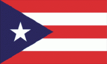

Puerto Rico and the United States
Although Puerto Rico had just begun its experiment with self-government granted by the Spanish rulers in 1897, its citizens initially greeted the transfer of ultimate authority from Spain to the United States in 1898 with much enthusiasm because of the promise of the expansion of American democratic values and economic development. However, while the transfer led to dramatic socioeconomic transformation, Puerto Ricans' dreams of political and economic development faded during the first three decades of the twentieth century. The promises of self-government and better conditions for Puerto Rico had to wait almost fifty years.
In the first years of U.S. military occupation, political and economic power centered in San Juan and all former Spanish administrative bodies were dismantled. Most local landowners lost their economic power to North American companies which came to own the principal centers of sugarcane production. Following two years of U.S. military occupation (1898-1900), a civilian government was established in 1900 by the Foraker Law (April 12, 1900) imposing trade tariffs, denying American citizenship, and creating a local government led by a governor, an Executive Council, and a judiciary appointed by the president of the United States. Nevertheless, local politics flourished as Puerto Ricans were given the right to elect the lower chamber of the legislature. In that forum, the local elite continued their demands for a more open and democratic political arrangement between Puerto Rico and the United States. Thus began Puerto Rico's political struggle for a definition of its status, a struggle that has lasted into the twenty-first century. And thus the national political parties came to divide around three fundamental alternatives: statehood, self-government, and independence.

In 1917, the U.S. Congress passed the Jones Act, which brought Puerto Rico the first significant political changes under U.S. colonial rule. With this law, Congress established a popularly elected legislative branch (a Senate and a House of Representatives) and extended American citizenship to Puerto Rican citizens. At about the same time, the island's economy experienced its first radical change. Although it continued to have an agrarian base centered in sugar production, it changed from a mercantilist system under Spain to a capitalist system under the United States.
Increasing American investments in the sugar and tobacco industries led to unprecedented economic growth but failed to bring social change. Poverty, malnutrition, illiteracy, and disease permeated the population. Such social stresses induced a wave of low-income Puerto Rican workers to migrate to the United States, particularly during the 1930s when unemployment on the island was approximately 65 percent.